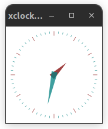

Basic Slurm jobs¶
This section describes the basics of queuing jobs using on the Esrum
cluster using the Slurm Workload Manager. This includes queuing tasks
with the sbatch command, monitoring jobs with squeue and
saccact, cancelling jobs with scancel, and reserving resources
for jobs that need more CPUs or more RAM.
Users of the PBS (qsub) queuing system on e.g. porus or
computerome can use this PBS to Slurm translation-sheet to
migrate qsub scripts/commands to sbatch.
A basic job script¶
In order to run a job using the Slurm workload manager, you must first
write a shell script containing the commands that you want to execute.
In the following example we just run a single command, echo "Hello,
slurm!", but scripts can contain any number of commands.
1#!/bin/bash
2
3echo "Hello, slurm!"
The script can be named anything you like and does not need to be
executable (via chmod +x), but the first line must contain a
shebang (the line starting with #!) to indicate how slurm should
execute it.
We use #!/bin/bash for the examples in this section, to indicate
that they are bash scripts, but it is also possible to use other
scripting languages by using the appropriate shebang (highlighted):
1#!/usr/bin/env python3
2
3print("Hello, slurm!")
Slurm scripts function like regular scripts for most part, meaning that the current directory corresponds to the directory in which you executed the script, that you can access environment variables set outside the script, and that it is possible to pass command-line arguments to your scripts (see below).
Queuing a job¶
In the following examples we will use the igzip command to compress
a file. The igzip command is similar to gzip except that it is
only available via a module, that it sacrifices compression ratio for
speed, and that it supports multiple threads. This allows us to test
those features with Slurm.
We start with a simple script, with which we will compress the FASTA
file chr1.fasta. This script is saved as my_script.sh:
1#!/bin/bash
2
3module purge
4module load igzip/2.30.0
5igzip --keep "chr1.fasta"
This script consists of three parts:
Firstly we run
module purgeto unload any modules we have already loaded. The advantage of this is that it ensures that we are only using the modules we ask for, and exactly the versions we ask for.Secondly, we use the
module loadcommand to load theigzipmodule from the UCPH-IT software library, which makes theigziptool available to us. See the Software on Esrum page for an introduction to using modules on Esrum.And finally, we run the
igzipcommand on our FASTA file. The--keepoption forigzipis used to preventigzipfrom deleting our input file when it is done.
Tip
We could also have loaded the module on the command-line before
queuing the command, and skipped the module purge and module
load commands, as Slurm remembers what modules we have loaded when
we run sbatch. However, loading all required software in your
sbatch scripts ensures that the script is reproducible. See the
Controlling environment variables section for additional information about
controlling what sbatch inherits from your current environment.
To queue this script, run the sbatch command with the filename of
the script as an argument:
$ ls
chr1.fasta my_script.sh
$ sbatch my_script.sh
Submitted batch job 8503
This will queue your script to be run using 1 CPU and about 16 GB of RAM. See the Reserving resources section below, for how to increase the amount of resources available to your script. By default, there is no limit on the maximum running time ("wall time") for jobs on Esrum.
The number reported by sbatch is the job ID of your job (JOBID),
which you will need should you want to cancel, pause, or otherwise
manipulate your job (see below).
Note
We do not need to set the current working directory in our script
(unlike PBS): sbatch uses the current directory as the working
directory, as if we had run the script directly using bash
my_script.sh.
Once the job has started running (or has completed running), you will
also find a file named slurm-${JOBID}.out in the current folder,
where ${JOBID} is the ID reported by sbatch, 8503 in this
example:
$ ls
chr1.fasta chr1.fasta.gz my_script.sh slurm-8503.out
The slurm-8503.out file contains any console output produced by your
script/commands. This includes both STDOUT and STDERR by default, but
this can be changed (see Common options). So if we had
misspelled the filename in our command then the resulting error message
would be found in the out file:
$ cat slurm-8503.out
igzip: chr1.fast does not exist
Passing arguments to sbatch scripts¶
Arguments specified after the name of the sbatch script are passed
to that script, just as if you were running it normally. This allows us
to update our script above to take a filename on the command line
instead of hard-coding that filename:
1#!/bin/bash
2
3module purge
4module load igzip/2.30.0
5igzip --keep "${1}"
We can then invoke the script using sbatch as above, specifying the
name of the file we wanted to compress on the command-line:
$ sbatch my_script.sh "chr1.fasta"
This is equivalent to the original script, except that we can now easily submit a job for any file that we want to process, without having to update our script every time.
For further information, see this tutorial for a brief overview of ways to use command-line arguments in a bash script.
Monitoring your jobs¶
You can check the status of your queued and running jobs using the
squeue --me command. The --me option ensures that only your
jobs are shown, rather than everyone's jobs:
$ squeue --me
JOBID PARTITION NAME USER ST TIME NODES NODELIST(REASON)
8503 standardq my_scrip abc123 R 0:02 1 esrumcmpn01fl
The ST column indicating the status of the job (R for running, PD for pending, and so on).
Completed jobs are removed from the squeue list and can instead be
listed using sacct:
$ sacct
JobID JobName Partition Account AllocCPUS State ExitCode
------------ ---------- ---------- ---------- ---------- ---------- --------
8503 my_script+ standardq+ 1 COMPLETED 0:0
8503.batch batch 1 COMPLETED 0:0
For more ways to monitor your jobs and the processes running in your jobs, see the Monitoring slurm jobs page.
Cancelling jobs¶
Already running jobs can be cancelled using the scancel command and
the ID of the job you want to cancel:
$ squeue --me
JOBID PARTITION NAME USER ST TIME NODES NODELIST(REASON)
8503 standardq my_scrip abc123 R 0:02 1 esrumcmpn01fl
$ scancel 8503
Should you wish to cancel all your jobs, use the -u option:
$ scancel -u ${USER}
When running batch jobs you can either cancel the entire job (array, see below) or individual sub-tasks. See the Running multiple tasks using arrays section.
Setting options¶
The sbatch command offers two methods for setting options, such as
resource requirements, notifications, etc. (see e.g.
Common options). The first option is simply to specify the
options on the command line (e.g. sbatch --my-option my_script.sh).
Note that options for sbatch must be placed before the filename
for your script. Options placed after the filename for your script
(e.g. sbatch my_script.sh --my-option) will instead be passed
directly to that script. This makes it simple to generalize scripts
using standard scripting techniques.
The second option, which we recommend for resource requirements and the
like, is to use #SBATCH comments.
For example, instead of queuing our job with the command
$ sbatch --my-option my_script.sh
We could instead modify my_script.sh by adding a line containing
#SBATCH --my-option near the top of the file:
1#!/bin/bash
2#SBATCH --my-option
3
4module purge
5module load igzip/2.30.0
6igzip --keep "chr1.fasta"
If we do so, then running sbatch my_script.sh becomes the equivalent
of running sbatch --my-option my_script.sh. This had the advantage
that our options are recorded along with the commands, and that we do
not have to remember to specify those options every time we run sbatch
my_script.sh.
This documentation will make use of #SBATCH comments, but remember
that you can also specify them directly on the command-line. If you
specify options on the command-line, then they take precedence above
options specified using #SBATCH comments.
Note
The #SBATCH lines must be at the top of the file, before any
other commands or the like. Moreover, there must be no spaces before
or after the # in the #SBATCH comments. Other comments (lines
starting with #) are allowed before and after the #SBATCH
comments.
#SBATCH comments can also be used with other scripting languages,
provided that you follow the rules described above, but note that
source-code formatters like black may add spaces after the #
and thereby break the #SBATCH comments.
Reserving resources¶
By default, a sbatch will request 1 CPU and just under 15 GB of ram
per reserved CPU. Jobs will not be executed before the requested
resources are available on a node and your jobs cannot exceed the amount
of resources you've requested.
Should your job require more CPUs, then you can request them using the
-c or --cpus-per-task option. The following script runs a job
with 8 CPUs, and is therefore automatically assigned 8 * 15 ~= 120
gigabytes of RAM:
1#!/bin/bash
2#SBATCH --cpus-per-task 8
3
4module purge
5module load igzip/2.30.0
6igzip --keep --threads 8 "chr1.fasta"
Notice that we need to not only reserve the CPUs, but we in almost all
cases also need to tell to our programs to actually use those CPUs. With
igzip this is accomplished by using the --threads option as
shown above. If this is not done then the reserved CPUs will have no
effect on how long it takes for your program to run!
To avoid having to write the same number of threads multiple times, we
can instead use the ${SLURM_CPUS_PER_TASK} variable, which is
automatically set to the number of CPUs we've requested:
1#!/bin/bash
2#SBATCH --cpus-per-task 8
3
4module purge
5module load igzip/2.30.0
6igzip --keep --threads ${SLURM_CPUS_PER_TASK} "chr1.fasta"
The amount of RAM allocated by default should be sufficient for most
tasks, but when needed you can request additional RAM using either the
--mem-per-cpu or the --mem options. The --mem-per-cpu option
allow you to request an amount of memory that depends on the number of
CPUs you request (defaulting to just under 15 GB per CPU), while the
--mem option allows you to request a specific amount of memory
regardless of how many (or how few) CPUs you reserve.
The following script a task with 8 CPUs and 512 gigabytes of RAM:
1#!/bin/bash
2#SBATCH --cpus-per-task 8
3#SBATCH --mem 512G
4
5module purge
6module load igzip/2.30.0
7igzip --keep --threads ${SLURM_CPUS_PER_TASK} "chr1.fasta"
The same total could have been requested by using #SBATCH
--mem-per-cpu 64G instead of #SBATCH --mem 512G.
As described in the Overview of cluster, each node has 128 CPUs available and 2 TB of RAM, of which 1993 GB can be reserved by Slurm. The GPU node has 4 TB of RAM available, of which 3920 GB can be reserved by Slurm, and may be used for jobs that have very high memory requirements. However, since we only have one GPU node we ask that you use the regular nodes unless your jobs actually require that much RAM. See the GPU / high-memory jobs section for how to use the GPU node with or without reserving a GPU.
Warning
The --nodes option and the --ntasks option will start
identical tasks on one or more nodes, so you should not be using
these options unless your tools are specifically designed for this!
Otherwise, each instance will try to write to the same output file(s)
and will produce results that are very likely corrupt.
If you need to run the same command on a set of files/samples, then see the Running multiple tasks using arrays section.
Best practice for reserving resources¶
Determining how many CPUs and how much memory you need to reserve for your jobs can be difficult:
Few programs benefit from using a lot of threads (CPUs) due to overhead and due to limits to how much of a given process can be parallelized (see Amdahl's law). Maximum throughput is often limited by how fast the software can read/write data.
We therefore recommended that you
Always refer to the documentation and recommendations for the specific software you are using!
Test the effect of the number of threads you are using before starting a lot of jobs.
Start with fewer CPUs and increase it only when there is a benefit to doing so. You can for example start with 2, 4, or 8 CPUs per task, and only increasing the number after it has been determined that the software benefits from the additional CPUs.
See if you can split your job into multiple (sub-)jobs that can run in parallel via Slurm, for example by submitting one job per chromosome or one job per sample. See the Running multiple tasks using arrays section for more information about batching jobs.
In addition, we ask that you consider the impact of your job on other users: While it isn't a problem if you reserve a lot of resources for a short amount of time, it will cause problems for other users if you were to, for example, reserve all available resources for several days.
When starting large jobs, it is also worth considering how busy the cluster is; while the queuing system should down-prioritize people who have been running a lot of jobs recently, nobody enjoys waiting hours or days for a short job to be stated. See the Monitoring the cluster section for how to monitor the overall activity of the cluster.
Common options¶
The following provides a brief overview of common options for sbatch
not mentioned above. All of these options may be specified using
#SBATCH comments.
The
--job-nameoption allows you to give a name to your job. This shows up when usingsqueue,sacctand more. If not specified, the name of your script is used instead.The
--outputand--erroroptions allow you to specify where Slurm writes your scripts STDOUT and STDERR. The filenames should always include the text%j, which is replaced with the job ID. See the manual page for usage. Note also that the destination folder must exist or no output will be saved!--timecan be used to limit the maximum running time of your script. We do not require that--timeis set, but it may be useful to automatically stop jobs that unexpectedly take too long to run. See thesbatchmanual page for how to specify time limits.--test-onlycan be used to test your batch scripts. Combine it with--verboseto verify that your options are correctly set before queuing your job:$ sbatch --test-only --verbose my_script.sh sbatch: defined options sbatch: -------------------- -------------------- sbatch: cpus-per-task : 8 sbatch: test-only : set sbatch: time : 01:00:00 sbatch: verbose : 1 sbatch: -------------------- -------------------- sbatch: end of defined options [...] sbatch: Job 8568 to start at 2023-06-28T12:15:32 using 8 processors on nodes esrumcmpn02fl in partition standardqueue
The
--waitoption can be used to make thesbatchblock until the queued tasks have completed. This can be useful if you want to run sbatch from another script.
Interactive sessions¶
If you need to run an interactive process, for example if you need to use an interactive R shell to process a large dataset, or if you just need to experiment with running a computationally heavy process, then you can start a shell on one of the compute nodes as follows:
[abc123@esrumhead01fl ~] $ srun --pty -- /bin/bash
[abc123@esrumcmpn07fl ~] $
Note how the hostname displayed changes from esrumhead01fl to
esrumcmpn07fl, where esrumcmpn07fl may be any one of the Esrum
compute nodes.
You can now run interactive programs, for example an R shell, or test computationally expensive tools or scripts. However, note that you cannot start jobs using Slurm in an interactive shell; jobs can only be started from the head node.
srun takes most of the same arguments as sbatch, including those
used for reserving additional resources if you need more than the
default 1 CPU and 15 GB of RAM:
$ srun --cpus-per-task 4 --mem 128G --pty -- /bin/bash
It is also possible to start an interactive session on the GPU /
high-memory nodes. See the GPU / high-memory jobs page for more
information. See the Advanced Slurm jobs page for more
information about the srun command.
Once you are done, be sure to exit the interactive shell by using the
exit command or pressing Ctrl+D, so that the resources reserved
for your shell are made available to other users!
Running graphical programs¶
Should you need to run a graphical program in an interactive session, then you must firstly enable X11 forwarding when connecting to the cluster.
On Windows, if you are using MobaXterm, then X11 should already be enabled. If X11 forwarding is not enabled, then see the Troubleshooting section below.
On Linux and OSX, when using
ssh, you must either include the-Xoption when connecting to the server:$ ssh -X esrumhead01fl
Or you must enable X11 forwarding in your
~/.ssh/configfile:Host esrum esrumhead01fl esrumhead01fl.unicph.domain HostName esrumhead01fl.unicph.domain User abc123 ForwardX11 yes
Once you have connected to Esrum with X11 forwarding enabled, you must
start an interactive session with the --x11 option:
$ srun --pty --x11 -- /bin/bash
$ xclock
If X11 forwarding is correctly enabled in your client, then you should see a small clock application on your desktop:
sbatch template script¶
The following is a simple template for use with the sbatch command.
This script can also be downloaded here.
#!/bin/bash
# The following are commonly used options for running jobs. Remove one
# "#" from the "##SBATCH" lines (changing them to "#SBATCH") to enable
# a given option.
# The number of CPUs (cores) used by your task. Defaults to 1.
##SBATCH --cpus-per-task=1
# The amount of RAM used by your task. Tasks are automatically assigned 15G
# per CPU (set above) if this option is not set.
##SBATCH --mem=15G
# Set a maximum runtime in hours:minutes:seconds. No default limit.
##SBATCH --time=1:00:00
# Request a GPU on the GPU code. Use `--gres=gpu:a100:2` to request both GPUs.
##SBATCH --partition=gpuqueue --gres=gpu:a100:1
# Send notifications when job ends. Remember to update the email address!
##SBATCH --mail-user=abc123@ku.dk --mail-type=END,FAIL
########################
# Your commands go here:
echo "Hello world!"
See also the Writing robust bash scripts page for tips on how to write
more robust bash scripts. A template using those recommendations is
available for download here.
What's next¶
The next section of the documentation covers advanced usage of Slurm, including how to run jobs on the GPU / high-memory node. However, if you have not already done so, then it is recommended that you read the Software on Esrum page for an introduction on how to use the module system on Esrum to load the software you need for your work.
Troubleshooting¶
Error: Requested node configuration is not available¶
If you request too many CPUs (more than 128), or too much RAM (more than 1993 GB for compute nodes and more than 3920 GB for the GPU node), then Slurm will report that the request cannot be satisfied.
If more than 128 CPUs requested:
$ sbatch --cpus-per-task 200 my_script.sh
sbatch: error: CPU count per node can not be satisfied
sbatch: error: Batch job submission failed: Requested node configuration is not available
More than 1993 GB RAM requested on compute node:
$ sbatch --mem 2000G my_script.sh
sbatch: error: Memory specification can not be satisfied
sbatch: error: Batch job submission failed: Requested node configuration is not available
To solve this, simply reduce the number of CPUs and/or the amount of RAM requested to fit within the limits described above. If your task does require more than 1993 GB of RAM, then you need to run your task on the GPU queue as described on the GPU / high-memory jobs page.
Additionally, you may receive this message if you request GPUs without specifying the correct queue or if you request too many GPUs.
If --partition=gpuqueue not specified:
$ srun --gres=gpu:2 -- echo "Hello world!"
srun: error: Unable to allocate resources: Requested node configuration is not available
If more than 2 GPUs requested:
$ srun --partition=gpuqueue --gres=gpu:3 -- echo "Hello world!"
srun: error: Unable to allocate resources: Requested node configuration is not available
To solve this error, simply avoid requesting more than 2 GPUs, and
remember to include the --partition option. See also the
GPU / high-memory jobs section.
srun fails with /bin/slurm_bcast_123456.0_esrumcmpn01fl: No such file or directory¶
If you accidentally specify a folder as the first component of an
srun command, then Slurm will fail with an error message complaining
that a slurm_bcast_* executable in that folder could not be found,
where the executable name contains the job ID and the node on which it
was run:
$ srun --pty /bin/
slurmstepd: error: execve(): /bin/slurm_bcast_123456.0_esrumcmpn01fl: No such file or directory
srun: error: esrumcmpn01fl: task 0: Exited with exit code 2
To fix this, ensure that you are running an executable and not a folder:
$ srun --pty /bin/bash
Note
This failure relates to the --bcast option, that allow you to
copy an executable from the head node to a folder on the node on
which the job is executed. This is typically not required on Esrum,
since all home, project, and dataset folders are shared across nodes.
X11 forwarding not working in MobaXterm¶
Firstly right-click on Esrum in the list of User sessions and
select Edit session. Make sure that the Advanced SSH settings
tab is open and verify that X11 forwarding is enabled as shown:

Secondly, press the OK button and open the Settings via the
gears icon on the main toolbar. Then select the X11 tab and verify
that X11 support is configured as shown:

Additional resources¶
Slurm documentation
Slurm summary (PDF)
The srun manual page